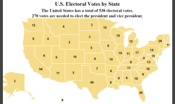

İkinci Dönem İçin Aday Olmamaya Karar Veren ABD Başkanları Oldu mu?
Lyndon B. Johnson 31 Mart 1968 akşamı şok olmuş ulusal televizyon izleyicilerine “Başkanınız olarak bir dönem daha partimin adaylığını istemeyeceğim ve kabul etmeyeceğim” dedi ve böylece ikinci bir seçim dönemi için aday olmamaya karar veren birkaç ABD başkanından biri oldu. Diğerleri arasında James K. Polk, James Buchanan, Rutherford B. Hayes, Calvin Coolidge, Harry S. Truman ve Joe Biden bulunmaktadır.
John F. Kennedy’nin başkan yardımcısı olan Johnson, Kennedy’nin Kasım 1963’te suikasta kurban gitmesi üzerine başkanlık koltuğuna oturdu. Kennedy’nin görev süresini tamamladıktan sonra 1964 yılında açık ara farkla başkan seçildi. Johnson’ın hırslı Büyük Toplum iç gündemi, 31 Ocak 1968’de Viet Kong ve Kuzey Vietnamlılar tarafından başlatılan Tet Taarruzu’nun Amerika’nın savaşa devam etmesinin anlamsızlığını ortaya koyduğu, giderek popülerliğini yitiren Vietnam Savaşı’ndaki başarısızlıkların gölgesinde kaldı. Taarruz nihayet 24 Şubat’ta bastırıldı, ancak yaklaşık üç hafta sonra Johnson New Hampshire Demokrat başkanlık ön seçimlerinde barış adayı Eugene McCarthy karşısında yenilgiden kıl payı kurtuldu. Sağlık durumu kötüleşen, kamuoyunda onaylanma oranı yüzde 40’ın altında olan ve savaşı idare edişine yönelik yaygın muhalefetten rahatsız olan Johnson yeniden seçilmeyi istemedi.
(Theodore Roosevelt de 1904’te başkan seçildikten ve bir dönem görev yaptıktan sonra 1908’de aday olmayı reddetti, ancak 1912’de üçüncü parti adayı olarak tekrar göreve talip oldu ve kaybetti).
Her ABD Eyaletinin Kaç Seçim Kurulu Oyu Vardır?
{kind=link}

Eyaletlere Göre ABD Seçmen Oyları
Amerika Birleşik Devletleri’nin toplam 538 seçmen oyu vardır.
Başkan ve başkan yardımcısını seçmek için 270 oya ihtiyaç vardır. Kaynak: Britannica Ansiklopedisi
Bu infografik, eyalet başına (Columbia Bölgesi dahil) en çoktan en aza doğru seçim kurulu oylarının bir listesini sunmaktadır. Veriler aşağıda listelenmiştir.
Kaliforniya’nın 54 seçim oyu vardır.
Teksas’ın 40 seçim oyu vardır.
Florida’nın 30 seçmen oyu vardır.
New York’un 28 seçmen oyu vardır.
Illinois’in 19 seçmen oyu vardır.
Pennsylvania’nın 19 seçmen oyu var.
Ohio’nun 17 seçmen oyu var.
Georgia’nın 16 seçmen oyu var.
Kuzey Carolina’nın 16 seçmen oyu var.
Michigan’ın 15 seçmen oyu vardır.
New Jersey’in 14 seçmen oyu var.
Virginia’nın 13 seçmen oyu var.
Washington’ın 12 seçmen oyu var.
Arizona’nın 11 seçmen oyu var.
Indiana’nın 11 seçmen oyu var.
Massachusetts’in 11 seçmen oyu var.
Tennessee’nin 11 seçmen oyu var.
Colorado’nun 10 seçmen oyu var.
Maryland’in 10 seçmen oyu var.
Minnesota’nın 10 seçmen oyu var.
Missouri’nin 10 seçmen oyu var.
Wisconsin’in 10 seçmen oyu var.
Alabama’nın 9 seçmen oyu vardır.
Güney Carolina’nın 9 seçmen oyu vardır.
Kentucky’nin 8 seçmen oyu vardır.
Louisiana’nın 8 seçmen oyu var.
Oregon’un 8 seçmen oyu vardır.
Connecticut’ın 7 seçmen oyu var.
Oklahoma’nın 7 seçmen oyu var.
Arkansas’ın 6 seçmen oyu var.
Iowa’nın 6 seçmen oyu var.
Kansas’ın 6 seçmen oyu var.
Mississippi’nin 6 seçmen oyu var.
Nevada’nın 6 seçmen oyu var.
Utah’ın 6 seçmen oyu var.
Nebraska’nın 5 seçmen oyu var.
New Mexico’nun 5 seçmen oyu var.
Hawaii’nin 4 seçmen oyu vardır.
Idaho’nun 4 seçmen oyu var.
Maine’in 4 seçmen oyu vardır.
Montana’nın 4 seçmen oyu vardır.
New Hampshire’ın 4 seçmen oyu vardır.
Rhode Island’ın 4 seçmen oyu vardır.
Batı Virginia’nın 4 seçmen oyu vardır.
Alaska’nın 3 seçmen oyu vardır.
Delaware’in 3 seçmen oyu vardır.
Columbia Bölgesi’nin 3 seçmen oyu vardır.
Kuzey Dakota’nın 3 seçmen oyu vardır.
Güney Dakota’nın 3 seçmen oyu vardır.
Vermont’un 3 seçmen oyu vardır.
Wyoming’in 3 seçmen oyu vardır.